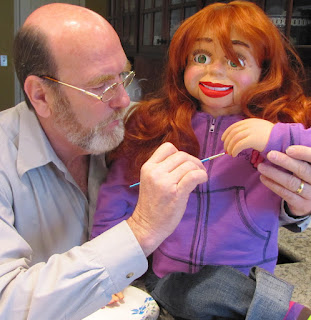

Update...
2/19/2012
Dr. Greg Pierce
I'm long overdue in saying thanks to you. About 1982 or so I was traveling to Montana to preach a revival. I was laid over in Denver for a day so my wife and I rented a car and drove to Maher Studio. I think it was you who took time to walk us through your shop. I took in as much as I could and when I returned to my church in Georgia I began experimenting with making composition figures (plastic wood).I later became a missionary in Alaska and had a vent figure shop in my garage and made a dozen or so figures. After 7 years I left Alaska and had to give my "children" away. Now I've started making figures again using cast heads. These make heirloom birthday presents for my grandchildren now...better than computer games.
Since Alaska I've been serving as a Southern Baptist director of missions, so far in three states, Virginia, Georgia and presently Arkansas...and still playing with dolls.
Thanks again, this unusual hobby all started with you taking time for me well over 20 years ago.
{kind=link}

PS; I still have my old expired NAAV certificate displayed on my office wall along with 3 Doctorates. It makes interesting conversation.Dr. Greg Pierce
Director of Missions
SE Arkansas